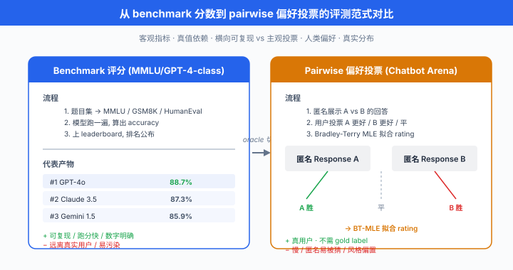
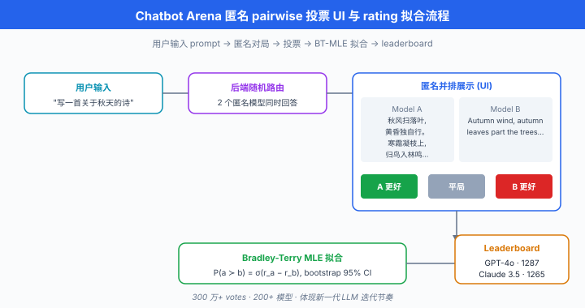
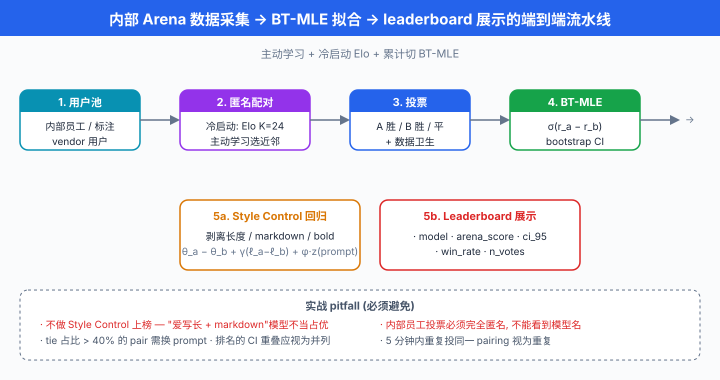

竞技场与人类偏好¶
一句话总结：当 benchmark 测不出"哪个模型更好用"，就把 100 万个真实用户拉进匿名 pairwise 投票，用 Bradley-Terry / Elo 把胜负序列拟合成 rating，这就是 Chatbot Arena 的核心思想。
BLEU 死了，LMSYS 活了。 上一节我们看到，现代 benchmark 用几十个客观任务把模型的知识、推理、代码能力"逼"出来。 可是当你在 ChatGPT 里写一首情诗、请 Claude 帮你劝退老板、或让 Gemini 帮孩子讲一个睡前故事时，没有任何一个 benchmark 能告诉你 "这次回答比另一个模型好". 这时候我们只有一个终极 oracle —— 真实用户的偏好。 这一节讲的是如何把成千上万次匿名 pairwise vote 变成一份可信的 leaderboard，以及围绕它的那些数学、偏差与偷懒陷阱.
- Benchmark 时代解决了"知识与推理"的评测，但没解决"用起来爽不爽"的评测。 一份写作、一次多轮对话、一段角色扮演的好坏，无法归约为 "test case 通过率". 学界与工业界 2023 年后集体转向人类偏好信号，最具代表性的产物是 LMSYS 的 Chatbot Arena.
- 这一节要覆盖：为什么 benchmark 不够 → Bradley-Terry 模型与 Elo 评分的数学基础 → LMSYS Chatbot Arena 的工程实现与 leaderboard 变迁 → MT-Bench / AlpacaEval 两种 LLM-as-judge 替代 → 人类偏好投票的四大偏差 → 中文竞技场生态 → 自建内部 Arena 的实战。
Benchmark 测不了什么¶
Benchmark 有一个隐藏假设：正确性是可以标注的. MATH 有正确答案，HumanEval 有 unit test, MMLU 有单选题的标准答案。 但下面这些真实用户场景，"正确性"根本无法预先标注:
- "帮我写一段婉转但坚决的辞职邮件"
- "用鲁迅的口吻锐评当代职场"
- "陪我玩个文字冒险游戏，你演旅店老板"
- "解释量子纠缠，讲给我 10 岁的儿子听"
- "把这段代码重构得更 Pythonic"
这几类任务的共同点:
- 开放式生成：有无穷多种"合理"回答，没有 gold reference
- 风格 / 语气 / 帮助度：人类觉得"好"的维度是多方面的，权重因人而异
- 多轮上下文：单轮的对错不代表整场对话的成功
- 对齐 / 拒答：拒答一个 borderline 请求算好还是不好，benchmark 说不清
多份 NLP 评测方法论工作 (如 Bowman & Dahl 2021 讨论 benchmark predictive validity 的分析等) 已经指出，GLUE / SuperGLUE 类 benchmark 上的高分模型，在真实用户偏好上不一定占优 (predictive validity 弱). LLM 时代这个问题只会更严重：MMLU 满分的模型可能话痨、Kaggle 冠军模型可能不会写邮件。 那唯一的兜底是什么？—— 让人类自己投票.
用户偏好作为 oracle 的思路是：把两个模型 (A, B) 的回答匿名并排展示给用户，用户选"A 更好 / B 更好 / 平局 / 都不好". 收集大量这类对局 (pairwise comparison) 之后，用统计模型把胜负序列拟合成每个模型的一个分数 (rating). 这个 rating 综合了所有维度的人类偏好，且没有 gold label 依赖.
关键问题：给定一堆 pairwise 比较，怎么算出 rating? —— 这就要请回 1952 年的 Bradley-Terry 模型。

Bradley-Terry 模型：从胜负到 rating¶
第 21 章 02 节我们已经在 RLHF 语境下见过 Bradley-Terry 模型 (作为 reward model 的概率假设). 这里换个视角再讲一次 —— 它是所有 pairwise ranking 系统的数学基础.
定义¶
- 假设每个模型 (选手) \(i\) 有一个潜在强度 \(r_i \in \mathbb{R}\). 把模型 \(a\) 与模型 \(b\) 拉出来对战，观察者报告 "\(a\) 胜"的概率是:
- 其中 \(\sigma(x) = 1 / (1 + e^{-x})\) 是 sigmoid. 差别只取决于 \(r_a - r_b\)，所以 rating 有一个平移不变性 —— 全体 \(r_i\) 同时加常数，概率不变。 实际使用时需要固定一个锚点 (例如把某个模型固定为 \(r = 0\)，或让所有模型均值为 0).
从对局数据拟合¶
- 给定观测：有 \(N\) 场对局，第 \(n\) 场是模型 \(a_n\) vs \(b_n\)，结果 \(y_n \in \{0, 1\}\) (1 = \(a_n\) 赢). 参数为 \(\mathbf{r} = (r_1, \ldots, r_M) \in \mathbb{R}^M\). 对数似然:
-
极大化 \(\mathcal{L}\) 就是 Bradley-Terry MLE. 由于 \(\sigma\) 与 log 都是凸性友好的组合，这个目标关于 \(\mathbf{r}\) 凸 (严格说是关于 \(\mathbf{r}\) 的差分凸)，用一阶或二阶方法能可靠拟合。
-
平局怎么办？常见做法是把平局折成 0.5 胜 + 0.5 败 (与 Elo 同款处理)，或用 Rao-Kupper 扩展显式建 tie 概率。
与 logistic regression 的等价¶
- 把每场对局编码成一个 \(M\) 维特征向量 \(\mathbf{x}_n\): \(x_{n, a_n} = 1\), \(x_{n, b_n} = -1\)，其他为 0. 那么 \(r_{a_n} - r_{b_n} = \mathbf{r}^\top \mathbf{x}_n\)，上面的 MLE 就是没有截距的 logistic regression, coefficient 即为 rating \(\mathbf{r}\). 这就是为什么工业界 (含 LMSYS) 现在直接用 sklearn / scipy 的 logistic regression 拟合 Bradley-Terry.
# Bradley-Terry MLE 拟合 — 用 scipy 二阶优化, 或用 sklearn logistic regression 等价
import numpy as np
from scipy.optimize import minimize
def fit_bt_mle(battles, num_models: int, anchor_idx: int = 0):
"""
battles: list of (a_idx, b_idx, y), y=1 表示 a 赢, 0 表示 b 赢, 0.5 表示平局
num_models: 模型总数
anchor_idx: 固定为 0 的模型 (消除平移自由度)
返回 shape=(num_models,) 的 rating
"""
def neg_log_likelihood(r_free):
# 把 r_free (少一维) 展开成完整 r, 令 r[anchor_idx] = 0
r = np.insert(r_free, anchor_idx, 0.0)
nll = 0.0
for a, b, y in battles:
diff = r[a] - r[b]
# log sigmoid(x) 用 log1p(exp(-x)) 数值稳定写法
log_sig = -np.log1p(np.exp(-diff))
log_1msig = -np.log1p(np.exp(diff))
nll -= y * log_sig + (1 - y) * log_1msig
return nll
# 初始猜测: 全 0
x0 = np.zeros(num_models - 1)
res = minimize(neg_log_likelihood, x0, method="L-BFGS-B")
r = np.insert(res.x, anchor_idx, 0.0)
return r
# 示例: 3 个模型 gpt4 (0), claude (1), llama (2)
battles = [
(0, 1, 1), (0, 1, 0), (0, 1, 1), # gpt4 vs claude: 2-1
(0, 2, 1), (0, 2, 1), (0, 2, 1), # gpt4 vs llama: 3-0
(1, 2, 1), (1, 2, 1), (1, 2, 0), # claude vs llama: 2-1
]
r = fit_bt_mle(battles, num_models=3, anchor_idx=2) # llama 锚为 0
print(f"gpt4: {r[0]:.3f}")
print(f"claude: {r[1]:.3f}")
print(f"llama: {r[2]:.3f}")
# 差值 (r_a - r_b) 才有意义, 绝对值取决于锚
- LMSYS Chatbot Arena 从 2024 年开始把 Elo 换成上面这种 BT-MLE 拟合，报告的分数看起来仍像 Elo (乘 400 / ln 10 后加 1000 anchor)，但统计上更严谨、方差可估.
Elo 评分系统¶
Elo 评分 (Elo rating) 由匈牙利裔美国物理学家 Arpad Elo 于 1960 年代为国际象棋设计，1970 年被 FIDE 采纳，至今仍是所有对战型运动 (象棋、围棋、Dota、Chatbot Arena) 的通用 rating 语言. 它的核心其实就是 Bradley-Terry 的在线增量近似.
Elo 的两条公式¶
- 预期胜率：给定选手 \(a\) 与 \(b\) 的当前 rating \(R_a, R_b\)，选手 \(a\) 的预期胜率 \(E_a\) 定义为:
- rating 更新：一场对局结果为 \(S_a \in \{0, 0.5, 1\}\) (败/平/胜)，更新:
- \(K\) 是学习率，决定单场对局的影响。 FIDE 象棋常用 \(K = 10 \sim 40\) (强者 K 小，新手 K 大); Chatbot Arena 早期用 \(K = 4\).
Elo 与 Bradley-Terry 的等价¶
- Elo 预期胜率里的 "400" 与 "10" 只是尺度选择. 把公式改写:
- 令 \(r_i = (\ln 10 / 400) \cdot R_i\)，就恢复到 Bradley-Terry 的 \(\sigma(r_a - r_b)\). 所以 Elo 与 BT 是同一个概率模型的不同尺度, 400 是象棋圈约定，用来让"200 分差 = 76% 胜率"这样的直觉数字更好记。
Elo 的问题¶
- 顺序依赖：同一批对局按不同顺序处理，得到的 rating 不同 (因为是在线更新，早期误差影响后续)
- 锚点漂移：若整个池子里模型都变强，新老模型的分数不可跨时段直接比较
- K 值权衡: K 大反应快但方差大；K 小稳但慢
- 无法给出置信区间：单点更新不带不确定性
BT-MLE 一次性用全部数据做 batch 拟合，消除顺序依赖，且能给出置信区间 (通过 bootstrap 或 Hessian). LMSYS 从 2024 年开始把 leaderboard 的官方分从 online Elo 切换到 BT-MLE + bootstrap CI，就是为了解决这些问题。
# Elo 增量更新 — 教学版, 便于理解, 生产用 BT-MLE
def elo_update(r_a: float, r_b: float, s_a: float, k: float = 32.0):
"""
r_a, r_b: 当前 rating
s_a: 对局结果, 1 = a 胜, 0 = a 败, 0.5 = 平
k: 学习率
返回 (new_r_a, new_r_b)
"""
expected_a = 1.0 / (1.0 + 10.0 ** ((r_b - r_a) / 400.0))
expected_b = 1.0 - expected_a
s_b = 1.0 - s_a
new_r_a = r_a + k * (s_a - expected_a)
new_r_b = r_b + k * (s_b - expected_b)
return new_r_a, new_r_b
# 示范: 1500 分的选手战胜 1600 分的选手 (爆冷)
r_a, r_b = elo_update(1500, 1600, s_a=1.0, k=32.0)
print(f"a: 1500 → {r_a:.1f}") # 上升约 22 分
print(f"b: 1600 → {r_b:.1f}") # 下降约 22 分
# 反过来, 1600 打赢 1500 (预期结果), 变化很小
r_a, r_b = elo_update(1600, 1500, s_a=1.0, k=32.0)
print(f"a: 1600 → {r_a:.1f}") # 上升约 10 分
print(f"b: 1500 → {r_b:.1f}") # 下降约 10 分
LMSYS Chatbot Arena¶
Chatbot Arena (Chiang et al. 2024) 由伯克利 LMSYS 团队于 2023 年 5 月上线，是至今规模最大、影响力最强的 LLM 人类偏好评测平台。 它的意义相当于 LLM 时代的 ImageNet leaderboard —— 不是每个人都能主导发布，但每个新模型都要来 Arena 打卡才算 legit.
工作流程¶
- 用户匿名提问：打开 chat.lmsys.org，输入任意 prompt
- 两模型并排回答：系统从模型池 (60+ 个) 随机抽两个，匿名标为 "Model A" 和 "Model B"，并排展示回答
- 用户投票：用户选 A 更好 / B 更好 / 平局 / 都不好
- 投票入库 + 拟合：累积到一定量 (通常每周 20-40 万票) 后，重新拟合 BT-MLE，更新 leaderboard
到 2025 年，Chatbot Arena 累积300 万+ pairwise votes，覆盖 200+ 模型，是最有说服力的 LLM 排名依据。
早期 Elo → BT-MLE 的切换¶
- 2023 年 5 月上线时用在线 Elo (\(K = 4\))，排名波动大，且对新模型冷启动不友好
- 2023 年底切到 BT-MLE + bootstrap 计算 CI，官方称 "Arena Score" (仍展示成 1000+ 的 Elo-like 数字)
- 2024 年补充Style Control 校正 (Chiang 2024)：分离风格 (长度、markdown、格式) 与内容，报"风格中立"分数
Leaderboard 的历史变迁 (真实节点，数字可能有微调)¶
| 时间 | 榜首 | Arena Score |
|---|---|---|
| 2023-06 | GPT-4 (0314) | ~1230 |
| 2023-11 | GPT-4-Turbo | ~1250 |
| 2024-03 | Claude 3 Opus | ~1253 |
| 2024-05 | GPT-4o | ~1287 |
| 2024-06 | Gemini 1.5 Pro | ~1275 (紧追 GPT-4o) |
| 2024-07 | Claude 3.5 Sonnet | ~1280 |
| 2024-09 | o1-preview / o1 | ~1330 (推理模型进榜) |
| 2025-Q1 | Gemini 2.0 / Claude 3.7 | 榜首反复易主 |
- 一个规律：从 GPT-4 到今天，Arena 榜首涨了 100+ 分，相当于约 65% 胜率优势 (依 \(\sigma(100 \cdot \ln 10 / 400) \approx 0.64\)). 每一次新一代前沿模型出场，Arena 就成为首个非厂商可信信号.
子榜分区¶
Arena 一开始只有一个 leaderboard，但随着模型能力分化，LMSYS 陆续开出:
- Arena-Hard：从投票 corpus 里筛出"高辨识度"的 prompt (让模型胜负差距显著) 组成 500 题，用 GPT-4 自动判分，复现 Arena 排名相关性 95%+，但测一个模型只要 10 分钟，不用等一周投票
- Coding Arena：只统计 coding 相关 prompt 的投票
- Vision Arena (LMSYS 2024)：图文任务，用户可以在 prompt 里附图
- Hard Prompts, Longer Query, Multi-turn：不同难度切片
Arena 的价值与局限¶
价值: - 无 gold label 依赖，直接对齐人类偏好 - 实时反映产品级差异，与 tech report 的独立第三方 - 大规模 (100 万+ votes) 使 rating 的 CI 收窄到 ±5 分内
局限: - prompt 分布偏移: Arena 用户以 tech-savvy 英文用户为主，编程 / 抽象推理 prompt 占比高，中文口语场景欠代表 - 匿名易被"猜品牌"：高级用户能从风格特征识别模型 (Claude 爱用 "certainly"、GPT-4o 爱 bullet)，破坏匿名性 - 投票稀疏: 60+ 模型两两配对，部分冷门配对样本数少，CI 大 - 风格 > 内容：长回答、有 markdown 的回答天然占便宜 (后详)

MT-Bench 与 AlpacaEval: LLM-as-Judge 替代¶
Chatbot Arena 要几十万真人投票才有可信的一档排名，太贵。 学界 2023 年提出用强模型 (GPT-4 / Claude) 打分代替人类，用少量精心构造的题目快速评估，与 Arena 有很高相关性 —— 这就是 LLM-as-Judge 的雏形。
MT-Bench (Zheng et al. 2023)¶
- MT-Bench 由 Zheng et al. 2023 (与 Chatbot Arena 同一团队) 提出，是首个 multi-turn LLM-as-judge benchmark. 结构:
- 80 个 prompt，分 8 类：writing / roleplay / reasoning / math / coding / extraction / STEM / humanities
- 每个 prompt 有两轮对话，用来测多轮上下文保持
- 打分模式：用 GPT-4 作为 judge，单点打分 (1-10 分) 或 pairwise 比较
- 报告数字：MT-Bench 单点 6.0+ 已是强模型，8.0+ 是前沿，9.0+ 极少
- 与 Arena 的相关性: Zheng 论文报告 MT-Bench (GPT-4 judge) 与 Chatbot Arena Elo 的 Spearman 相关系数 = 0.94，说明这 80 题的 GPT-4 打分可以廉价预测几十万真人投票的结果
AlpacaEval (Li et al. 2023)¶
- AlpacaEval (Li et al. 2023，斯坦福 Alpaca 团队) 是单轮 pairwise LLM-as-judge. 结构:
- 805 个 instruction (来自真实用户查询，覆盖 QA / 建议 / 创意 / 写作等)
- 每个 instruction 让待评模型与参考模型 (默认 text-davinci-003，后升为 GPT-4-turbo) 各生成一份
- 用 GPT-4 (作为 judge) 判 A 好 / B 好 / 平，报告胜率 (win rate)
- 优点：只跑 805 次前向 + 805 次判分，一小时能评完，比 Arena 快几个数量级
- 局限：单轮、无法测多轮；且和 MT-Bench 一样有judge model 偏差
Length-Controlled AlpacaEval¶
- AlpacaEval 有个众所周知的问题：回答越长，胜率越高 —— judge 天生偏好啰嗦回答。 一份 300 词的回答比 100 词的更容易被 GPT-4 judge 判为 "好".
- Dubois et al. (2024) 提出长度受控评估 (Length-controlled AlpacaEval). 核心思路：在 logistic regression 里加入长度差作为控制变量，分离出模型的"内在质量"与"长度加成":
- \(\theta_i\) 是长度校正后的模型能力, \(\ell_a - \ell_b\) 是两回答的长度差 (通常用 log(token 数)), \(\gamma\) 是长度偏好系数 (拟合出来通常 > 0，表示 judge 确实偏爱长), \(z(\text{prompt})\) 是 prompt 相关的固定效应。
- 拟合后取 \(\theta_a\) 作为该模型的长度中立分数，与 Chatbot Arena Elo 的相关性从 0.94 (原始 AlpacaEval) 提升到 0.98. 这是 AlpacaEval 2 (LC) 的核心贡献。
人类偏好投票的偏差¶
用人类投票不代表就有"真理". 大量研究揭示了偏好投票中的系统性偏差，是所有 arena 类评测都要防范的坑。
位置偏差 (position bias)¶
- 在 pairwise UI 中，用户 (以及 LLM judge) 倾向于投左侧那一个. 早期 Chatbot Arena 数据显示，若不做处理，左侧模型的胜率比真实值高 3-5%.
- 应对：每次配对随机打乱 A/B 顺序，或对同一 prompt 做两次 (A 在左 / A 在右) 取平均。 LMSYS 严格执行前者。 LLM-as-Judge 场景更严重：Wang et al. (2023) 发现 GPT-4 judge 的 position bias 可达 20%+，必须做双向判分平均.
长度偏差 (length bias)¶
- 长回答被认为好。 Dubois 2024 显示，只要多写 50 词，平均胜率提升 3-8%. 这不是内容更好，而是认知偏差 (更多字看起来更用心).
- 应对: (1) Length-controlled AlpacaEval 的统计校正；(2) 在 judge prompt 里显式告知 "长度不是好坏标准"; (3) 分层比较 (只在相似长度对局里比).
风格胜过内容 (style over substance)¶
- Boubdir et al. (2023) 分析发现，用户在 pairwise 判分时，格式漂亮的回答 (合理 bullet / bold / markdown / emoji) 胜率显著高于纯文本回答，即使内容质量相似。 这在 Chatbot Arena 上体现为 GPT-4o 类模型对 Claude 类模型的部分优势可能被"排版加成"放大。
- 应对: LMSYS 2024 起在 Arena leaderboard 上加了 Style Control 版本，用回归剥离 markdown / bold / bullet / length 等风格特征，报告"风格中立"分数。 结果显示原始 GPT-4o 与 Claude 3.5 Sonnet 的差距，在 Style Control 后缩小到几乎持平。
母语与文化偏差¶
- 英文提问 & 英文回答的对局，拟合出的 rating 与真实全球用户偏好不一定对齐。 中文母语用户对中文表达的敏感度 (是否地道、有无"翻译腔") 是 GPT-4 judge 感知不到的。
- 应对：分语言子榜 (LMSYS 有 Chinese / French / German 分区)，且引入母语人类审核。
LLM-as-Judge 特有的偏差¶
- 自我偏好 (self-preference bias): GPT-4 判自己回答分更高的倾向；详见下一节 LLM-as-Judge 深挖。
- 判分粒度偏差: 1-10 打分，judge 集中在 6-8，底 (1-2) 与顶 (9-10) 使用不足，压缩了模型间差异。
Anthropic (2024) 的一篇内部技术报告 (以及 Zheng et al. 2023 的原始 MT-Bench 论文附录) 系统测量了这些偏差的量级，建议任何用 LLM-as-Judge 的评测都必须: (1) 双向判分平均消 position; (2) 匿名化去品牌信号；(3) 长度做协变量校正；(4) 至少两个不同 judge 交叉验证。
中文竞技场生态¶
英文世界有 Chatbot Arena，中文用户同样需要母语偏好评测. 主要三家:
SuperCLUE 竞技场 (CLUE 团队，2023-)¶
- 与 SuperCLUE benchmark 一起上线，但独立运作 pairwise 投票平台。 特点:
- 中文母语题池，覆盖角色扮演、传统文化、代码、逻辑等
- 定期发布中文 LLM Arena leaderboard，每季度更新
- 引入专家 + 大众混合投票，部分子榜由行业专家把关
FlagEval Arena (北京智源，2023-)¶
- 智源 (BAAI) 主导，与 FlagEval benchmark 生态配套。 特点:
- 覆盖中英双语
- 支持多模态 arena (VLM 图文任务的 pairwise)
- 数据开放，部分投票 corpus 可下载研究
OpenCompass Arena (上海 AI Lab, 2024-)¶
- 上一节讲的 OpenCompass 团队 2024 年开出的 arena 分支。 特点:
- 与 OpenCompass benchmark 强耦合：同一个模型可以既跑 80+ benchmark，又参与 arena
- 司南榜单 每月更新，含 SubjectiveArena 主观投票排名
- 面向中文开发者的默认选择
中文 arena 的独有挑战¶
- 中文投票用户规模远小于英文 (Chatbot Arena 数百万 votes，中文 arena 通常几万到几十万级), CI 更宽
- 中文 tokenizer 差异导致长度对比更不公平 (同一段中文，不同模型 token 数可能差 30%)
- 文化 / 政治敏感话题的处理：中文 arena 通常 prompt 池会过滤敏感话题，但也因此减少了"真实场景覆盖"
实战：自建内部 Arena¶
生产环境经常需要在自己的模型池 (含内部微调模型) 上跑 arena. 下面给一份"上手就能做"的最小实现清单。
1. Pairwise 投票 UI 设计¶
关键 UX 原则: - 匿名：左右两栏只写 "Model A" / "Model B"，不显示模型名 - 随机打乱：每次刷新，A/B 随机分配 - 对局 gating：投票前必须看完两个回答的完整内容 (可用滚动到底 + 3 秒计时确认) - 四选一: "A 更好 / B 更好 / 平局 / 都不好" (第四项非常重要，用来过滤模型都翻车的对局) - 可选文本理由：投票后弹出 "为什么?" 输入框，收集半结构化理由 (后期做偏差分析)
2. 冷启动：用少量投票 bootstrap Elo¶
- 系统上线初期，只有几百票，BT-MLE 不稳定。 先用 online Elo (\(K = 32\)，初始都是 1000 分) 快速拟合，让 leaderboard 有个粗略雏形。
- 累积到 每对至少 20 场对局后，切换到 batch BT-MLE + bootstrap 1000 次 得到 CI. 具体切换阈值取决于模型数：\(M\) 个模型的完全图需要 \(\binom{M}{2}\) 对，每对 20 场，总计 \(20 \binom{M}{2}\) 场。
- 8 个模型 = \(20 \cdot 28 = 560\) 场；30 个模型 = \(20 \cdot 435 = 8700\) 场。 显然模型多时冷启动成本高，需要主动学习采样。
3. 主动学习采样：优先让"不确定"的对局出现¶
- 随机抽 A/B 的问题：大部分对局是"预期胜负明确"的 (强模型 vs 弱模型)，信息量低。 应该优先让 rating 接近的模型对战 —— 不确定对局 提供更多信息。
数学上，一场对局 \((a, b)\) 的Fisher 信息量正比于:
- 当 \(r_a = r_b\) 时，\(I = 0.25\) (最大)；当 \(|r_a - r_b|\) 很大时，\(I \to 0\). 同样的投票预算，优先安排 rating 接近的对局，能让 CI 收得更快。
# 主动学习式对局采样: 优先让 rating 接近的模型对战
import numpy as np
def sample_pair_active(ratings: np.ndarray, temperature: float = 100.0):
"""
ratings: shape=(M,), 当前 rating 估计
temperature: 越小越偏向"rating 接近"; 越大越接近随机
返回 (a_idx, b_idx)
"""
M = len(ratings)
# 对每对 (a, b), 权重 = P(a>b) * P(b>a) 的 exponential-tempered 版本
# 用 Elo 尺度: sigma((r_a - r_b) * ln10/400)
diffs = ratings[:, None] - ratings[None, :] # (M, M) diff matrix
scale = np.log(10) / 400.0
p_win = 1.0 / (1.0 + np.exp(-scale * diffs)) # P(a > b)
info = p_win * (1.0 - p_win) # 信息量 (unnorm)
np.fill_diagonal(info, 0.0) # 自己 vs 自己剔除
# 温度调节
weights = np.exp(info / temperature * 4.0) # * 4 让 [0, 0.25] 拉开
weights[np.tril_indices(M)] = 0.0 # 只取上三角避免重复
weights = weights / weights.sum()
# 从 M*M 网格里按权重采一对
flat = weights.flatten()
idx = np.random.choice(len(flat), p=flat)
a, b = divmod(idx, M)
# 再随机决定 A/B 展示顺序 (消 position bias)
if np.random.rand() < 0.5:
a, b = b, a
return a, b
# 用法: 每次给 UI 抽一对模型
ratings = np.array([1000, 1020, 950, 1100, 1080, 970])
for _ in range(5):
a, b = sample_pair_active(ratings)
print(f"次对局: 模型 {a} vs 模型 {b}")
4. leaderboard 展示¶
一份完整的内部 leaderboard 至少要报:
| 字段 | 含义 |
|---|---|
| model | 模型名 |
| arena_score | BT-MLE 拟合的 rating (乘 400/ln10 + 1000 anchor) |
| ci_95 | bootstrap 95% CI |
| n_votes | 该模型参与的总对局数 |
| win_rate | 胜率 (含平局折 0.5) |
| updated | 拟合时间戳 |
- 若模型数 > 10，应该同时展示Style Control 版本 (用回归剥离长度 / markdown / bold 等特征后的 rating)，以对比"内容强度"与"表现风格".
5. 防作弊 & 数据卫生¶
- 同一用户不能连续投同一模型：用 IP + 浏览器指纹 + session, 5 分钟内投同一 pairing 视为重复
- 异常快速投票剔除: < 3 秒就投的对局默认丢弃 (读都没读)
- 判分外泄防线：内部员工投票时必须完全匿名，且不能在其他渠道看到模型名，否则会人为拉高自家模型
6. 常见 pitfall¶
- 不做 style control 直接上榜：会让"爱写长回答 + markdown"的模型不当占优
- 平局占比过高不做子分析：若某对模型 tie 率 > 40%，说明 prompt 对该 pair 不辨析，应换更硬的 prompt 或分开单独测
- 忽视 CI：只报点估计的 leaderboard 不严谨；排名的 CI 有重叠时，视为并列

与下一节的衔接¶
- 本节讲的 LMSYS Chatbot Arena / MT-Bench / AlpacaEval 共同的核心思路是用 pairwise 比较 + 概率模型 (Bradley-Terry) 把散乱胜负拟合成 rating. 但 MT-Bench 与 AlpacaEval 已经把"判分主体"从人类换成了 GPT-4 / Claude —— 这就自然引出下一节的主题：LLM-as-Judge 的方法学. 我们会看到怎么设计判分 prompt、怎么控制 judge 偏差、怎么用多 judge 融合，以及 constitutional AI / rubric-based judging 这些前沿技术。
📌 本节要点¶
- Benchmark 测不了对话质量：开放式生成、风格、多轮、helpful 等维度没有 gold label，只能用人类偏好投票兜底 —— Chatbot Arena 由此诞生。
- Bradley-Terry 模型: \(P(a \succ b) = \sigma(r_a - r_b)\)，用一个潜在强度 \(r_i\) 就能把 pairwise 胜负拟合成 rating，与不带截距的 logistic regression 完全等价，现代竞技场都用 BT-MLE + bootstrap 拟合。
- Elo 是 BT 的在线增量近似：更新式 \(R'_a = R_a + K(S_a - E_a)\)，预期胜率 \(E_a = 1 / (1 + 10^{(R_b - R_a)/400})\), "400" 与 "10" 只是尺度选择，Elo 与 Bradley-Terry 数学同构。
- LMSYS Chatbot Arena: 300 万+ 匿名 pairwise votes, 200+ 模型，从 GPT-4 → Claude 3 Opus → GPT-4o → Claude 3.5 Sonnet → o1 一路标记了前沿模型迭代节奏，是 LLM 时代最有说服力的第三方 leaderboard.
- MT-Bench / AlpacaEval / LC-AlpacaEval：用 GPT-4 judge 在 80 / 805 题上快速评分，与 Chatbot Arena Elo 的 Spearman 相关 0.94 → 0.98 (长度控制后)，是廉价 arena 代理；长度受控评估 (Length-controlled AlpacaEval) 用回归 \(\theta_a - \theta_b + \gamma(\ell_a - \ell_b)\) 分离长度加成与内在能力。
- 四大偏差：位置偏差 (position bias，投左侧的倾向，用双向平均消) / 长度偏差 (length bias，长回答天然占便宜，用长度控制回归消) / 风格胜过内容 (style over substance, markdown / bullet 加分，用 Style Control 消) / 母语文化偏差 (英文语料训练的 judge 感知不到中文微妙).
- 中文竞技场: SuperCLUE Arena / FlagEval Arena / OpenCompass Arena 是三大中文母语平台，覆盖中文特有场景与文化敏感度，但用户规模比英文小一到两个量级。
- 自建内部 Arena：匿名 pairwise UI + 冷启动用 Elo 快速 bootstrap + 累计后切 BT-MLE + bootstrap CI + 主动学习采样 (优先让 rating 接近的对局出现，Fisher 信息量 \(I \propto \sigma(r_a - r_b)\sigma(r_b - r_a)\) 在 \(r_a = r_b\) 处最大) —— 一份 200 行 Python 就能跑起来。
参考文献¶
- Bradley, R. A., & Terry, M. E. (1952). Rank Analysis of Incomplete Block Designs: I. The Method of Paired Comparisons. Biometrika, 39(3/4), 324-345.
- Elo, A. E. (1978). The Rating of Chessplayers, Past and Present. Arco Publishing, New York. (Elo 系统原著.)
- Chiang, W.-L., Zheng, L., Sheng, Y., Angelopoulos, A. N., Li, T., Li, D., Zhang, H., Zhu, B., Jordan, M., Gonzalez, J. E., & Stoica, I. (2024). Chatbot Arena: An Open Platform for Evaluating LLMs by Human Preference. arXiv:2403.04132. (LMSYS Chatbot Arena.)
- Zheng, L., Chiang, W.-L., Sheng, Y., Zhuang, S., Wu, Z., Zhuang, Y., Lin, Z., Li, Z., Li, D., Xing, E. P., Zhang, H., Gonzalez, J. E., & Stoica, I. (2023). Judging LLM-as-a-Judge with MT-Bench and Chatbot Arena. NeurIPS 2023 Datasets and Benchmarks. arXiv:2306.05685.
- Li, X., Zhang, T., Dubois, Y., Taori, R., Gulrajani, I., Guestrin, C., Liang, P., & Hashimoto, T. B. (2023). AlpacaEval: An Automatic Evaluator of Instruction-following Models. GitHub / tatsu-lab.
- Dubois, Y., Galambosi, B., Liang, P., & Hashimoto, T. B. (2024). Length-Controlled AlpacaEval: A Simple Way to Debias Automatic Evaluators. arXiv:2404.04475.
- Wang, P., Li, L., Chen, L., Zhu, D., Lin, B., Cao, Y., Liu, Q., Liu, T., & Sui, Z. (2023). Large Language Models are not Fair Evaluators. arXiv:2305.17926. (Position bias in LLM-as-Judge.)
- Boubdir, M., Kim, E., Ermis, B., Fadaee, M., & Hooker, S. (2023). Elo Uncovered: Robustness and Best Practices in Language Model Evaluation. arXiv:2311.17295. (Elo / pairs judgment issues 与偏差.)
- Xu, L., Li, A., Zhu, L., Xue, H., Zhu, C., Zhao, K., He, H., Zhang, X., Kang, Q., & Lan, Z. (2023). SuperCLUE: A Comprehensive Chinese Large Language Models Benchmark. arXiv:2307.15020.
- 上海人工智能实验室 (2024). OpenCompass 司南评测榜单. https://opencompass.org.cn/. (OpenCompass Arena.)
- 北京智源人工智能研究院 (2023). FlagEval：大模型评测平台. https://flageval.baai.ac.cn/. (FlagEval Arena.)